대기 Idle
4.267초 · 제자리 반복
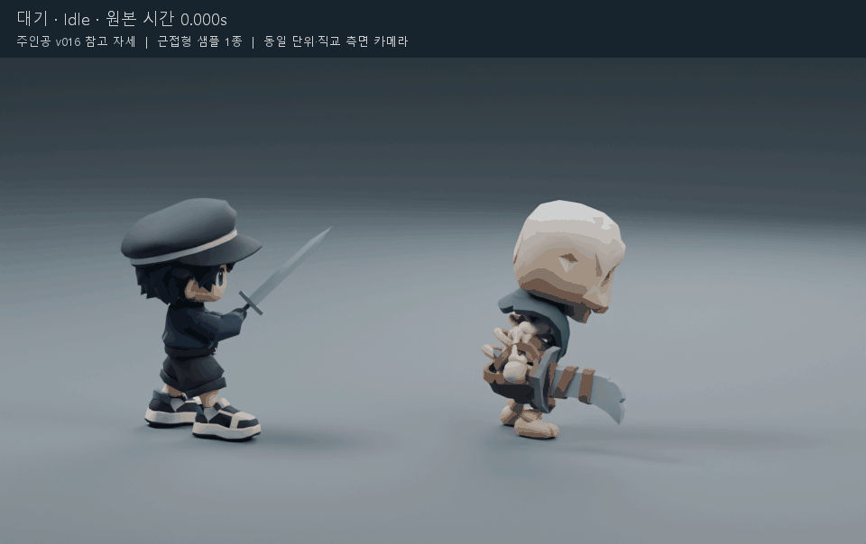
0.5배속 전체 동작
모든 프레임 펼쳐 보기
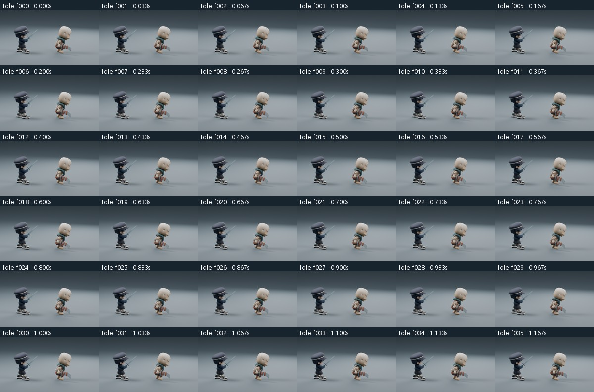
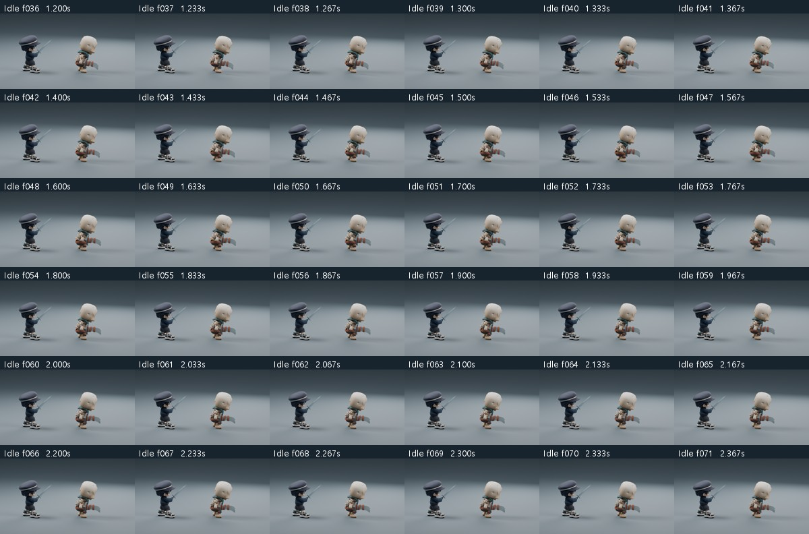
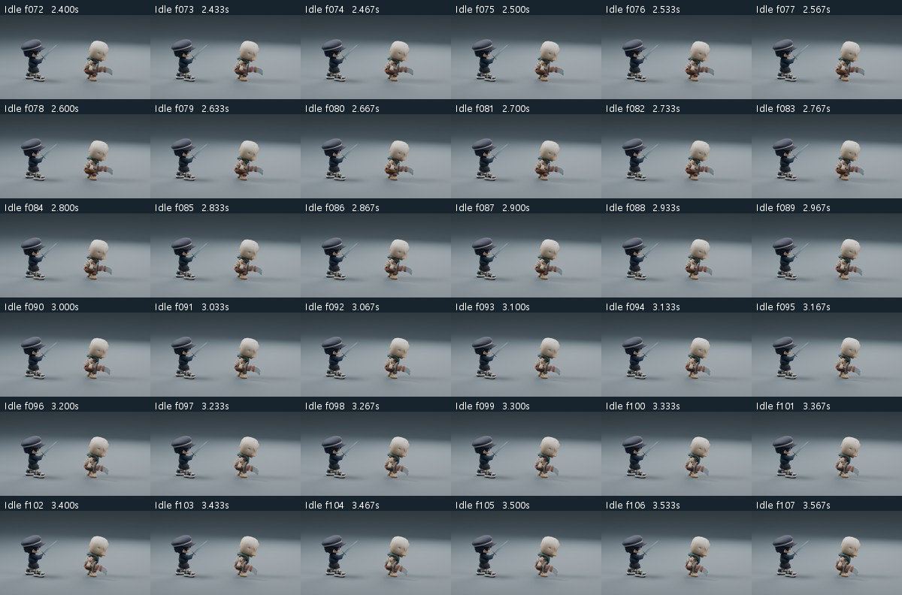
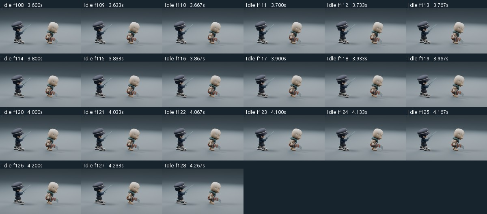
청록 망토 해골 근접병 한 종입니다. KayKit의 원래 모델·리그·동작을 사용했고 주인공 v016과 동일 단위의 직교 측면 카메라에 배치했습니다. 종족과 한손 칼은 이번 샘플의 외형·공격 제안입니다.
왼쪽 주인공은 크기 비교용 정지 자세입니다. 오른쪽 몬스터는 Idle / Move / Attack / Hit 네 클립입니다. 뼈 궤적을 새로 합성하지 않았으며 원본 동작의 속도를 유지했습니다.
Idle4.267초 · 제자리 반복





Move0.800초 · 제자리 반복
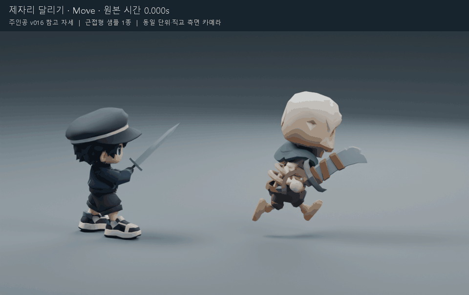
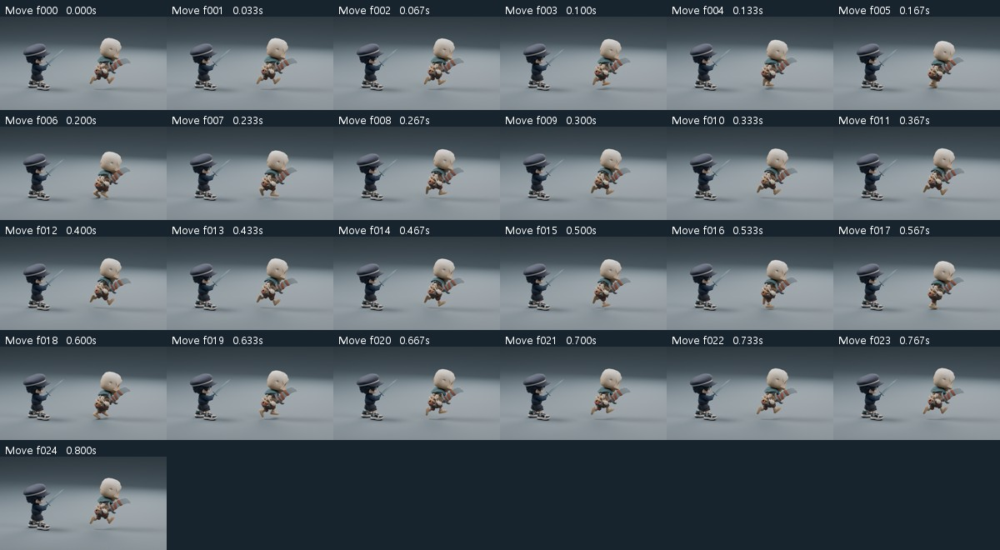
Attack1.067초 · 단발 동작
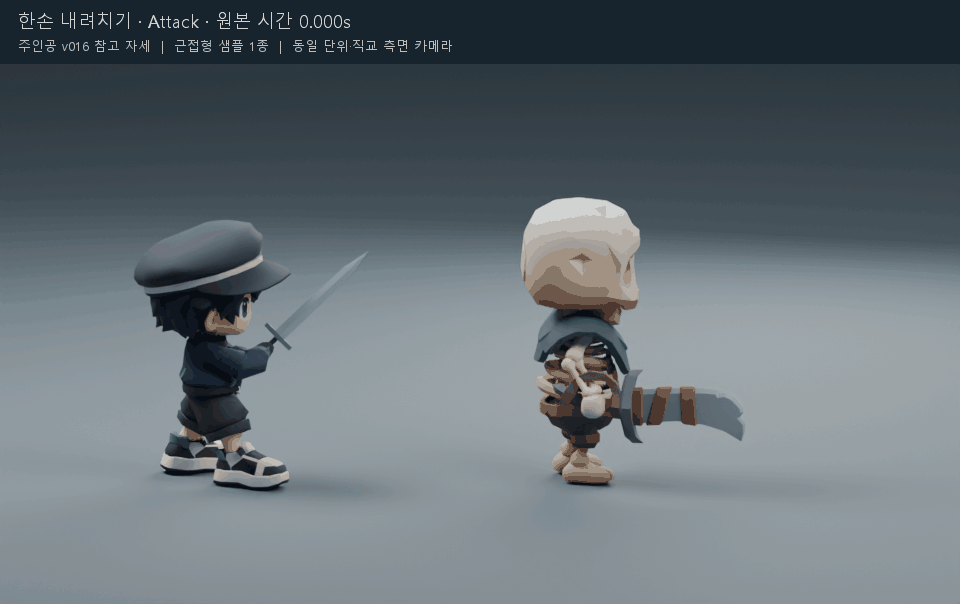
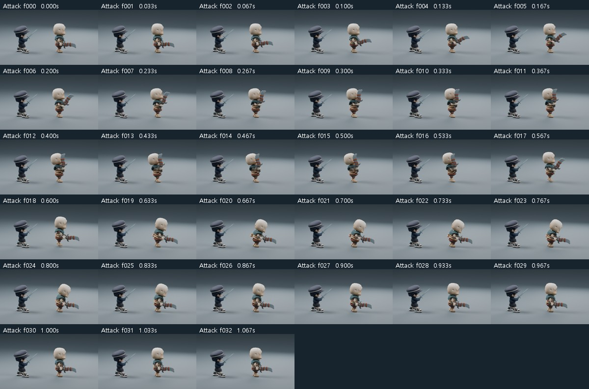
Hit0.667초 · 단발 동작
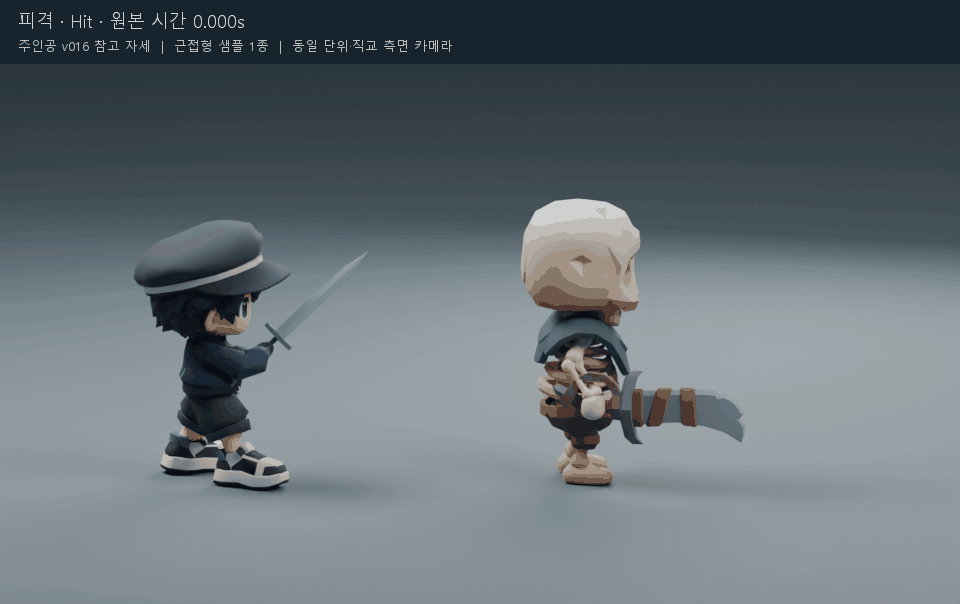
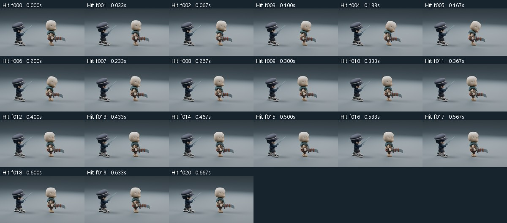
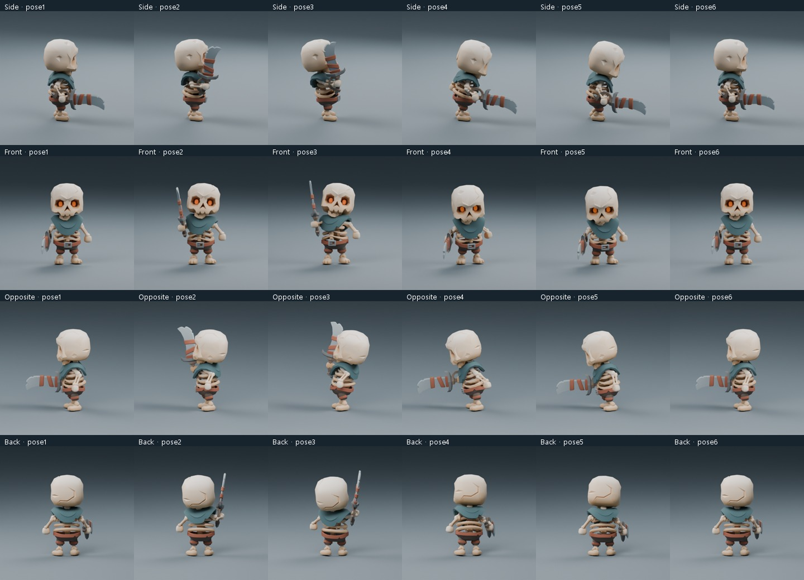
원본의 준비·타격·회수 구조를 유지했습니다. 공격 판정 이벤트·게임 이동 속도·실제 Animator 전환은 연결하지 않았습니다. 제자리 달리기의 발 접지는 최종 게임 이동 속도와 함께 확인해야 합니다. Unity 페이지의 0.12초 연결은 검수용 미리보기입니다.